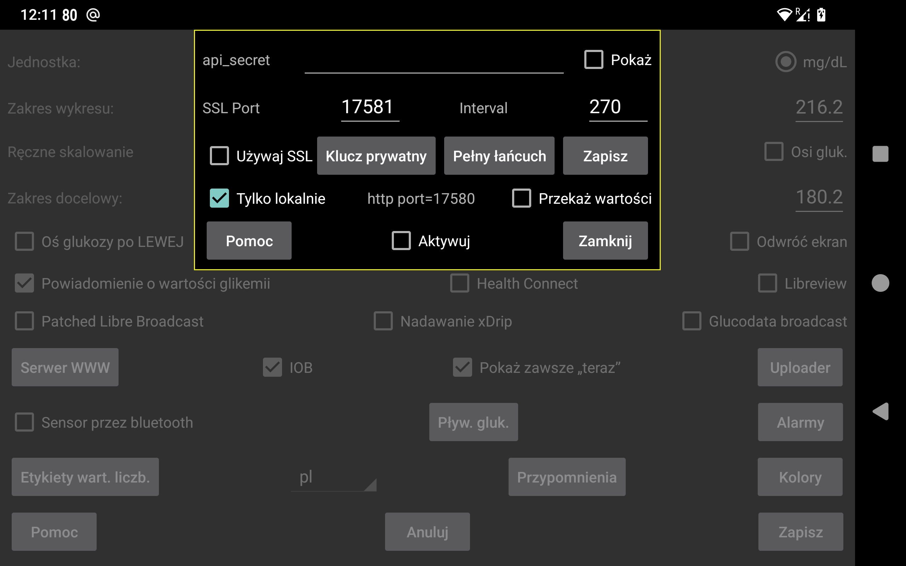
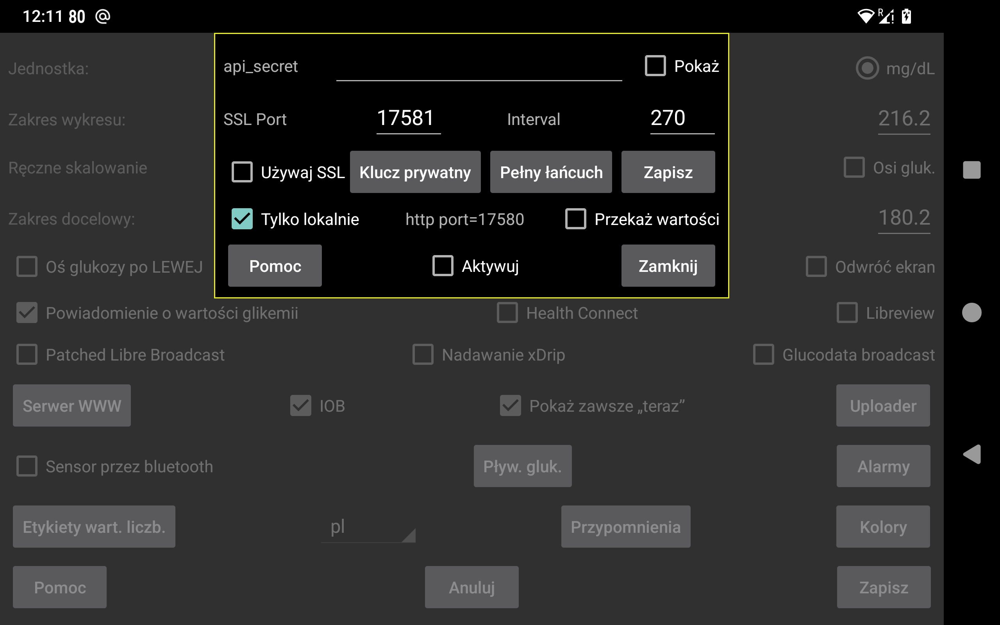

Juggluco zawiera serwer WWW, za pomocą którego inne aplikacje mogą odbierać wartości glukozy z Juggluco. Może być używany przez zegarki xDrip i niektóre aplikacje Nightscout.
Korzystanie z aplikacji stworzonych do korzystania z serwera WWW xDrip jest stosunkowo łatwe. Wystarczy zaznaczyć opcję Aktywny. Następnie aplikacje mogą odbierać dane glukozy z adresu 127.0.0.1 na porcie 17580. Adres URL serwera Nightscout: http://127.0.0.1:17580
Z opcji tej mogą korzystać też niektórzy „followerzy” - odbiorcy danych Nightscout. xDrip, Diabox, aplikacja Windows Floating Glucose oraz widget na systemy Windows, Linux i macOS pod nazwą Owletmogą być używane z http, gdy włączona jest opcja "tylko lokalnie". Na MacOS to samo dotyczy aplikacji Nightscout Menu Bar, Gluco Status i Gluco Tracker (wszystkie w Apple Store). Http jest również wymagane tylko w przypadku aplikacji Nightscouter i LoopFollow (IOS) oraz Nightguard (IOS i WatchOS).
Jeśli chcesz uzyskać dostęp do Juggluco przez Internet, musisz przekierować port z modemu/routera. Zobacz:
https://www.makeuseof.com/tag/what-is-port-forwarding-and-how-can-it-help-me
Lewe środkowe menu -> Klonowanie -> Dodaj połączenie -> Pomoc
Inni followerzy w ramach Nightscout korzystają tylko z protokołu https, a to wymaga, aby Juggluco posiadało uwierzytelniony klucz SSL dla nazwy domeny używanej do uzyskania dostępu do Juggluco. Jeśli twój zewnętrzny adres IP ma powiązaną nazwę hosta, możesz uzyskać certyfikat za darmo za pośrednictwem Certbot. Nie można z niej skorzystać, jeśli zewnętrzny adres IP nie ma nazwy hosta. Bezpłatną nazwę domeny można uzyskać na stronie https://www.freenom.com. Spróbowałem, ale w ciągu kilku tygodni bez żadnego powiadomienia po prostu zabrali mi domenę, a kiedy próbowałem ją ponownie zarejestrować, miała cenę. Nazwę hosta można kupić za kilka euro rocznie (na przykład na stronie https://www.strato.nl/domeinnaam).
Po zainstalowaniu Certbota i przekierowaniu portu 80 (http) z modemu do komputera, można po prostu nacisnąć:
certbot certonly --standalone --preferred-challenges http -d myhostname
Zobacz https://devpress.csdn.net/linux/62e7999e907d7d59d1c8cfd0.html.
Po użyciu Certbota znalazłem klucz prywatny w /etc/letsencrypt/live/myhostname/privkey.pem i pełny łańcuch w /etc/letsencrypt/live/myhostname/fullchain.pem. "myhostname" to nazwa hosta, której użyłem.
Jeśli otrzymałeś pliki kluczy od organu SSL, musisz je przekazać Juggluco. Klucz prywatny można odczytać, naciskając"Klucz prywatny", a pełny łańcuch, naciskając"Pełny łańcuch".
Jeśli chcesz tylko wysłać wartości glukozy z jednego urządzenia z Androidem do drugiego, lepiej użyć funkcji klonowanie w Juggluco (Lewe środkowe menu -> Klonowanie).
SSL jest wymagany w przypadku aplikacji AAPS, Diabetes:M, Nightwatch i Checkmate na Androida, Sugarmate (MacOS i IOS) oraz Xdrip4ios, Shuggah i Cockpit (IOS). Jako adres URL serwera Nightscout określ:
https://hostname:port
hostname to nazwa hosta uwierzytelnionego klucza przekazanego do Juggluco, port to port przekierowany do portu określonego na tym ekranie (domyślnie: 17581).
AAPS może być używany z Juggluco 7.3.0 i nowszymi wersjami. W tym celu należy wybrać NSClientV3 w AAPS, z następującymi ustawieniami:
jako tokenu dostępu do NS użyj określonego tutaj api-secret;
odznacz " Connect to websockets (Połącz z websockets)";
w sekcji "Synchronizacja" wyłącz wszystkie przesyłane pliki. Włącz tylko:
Odbieranie/uzupełnianie danych CGM;
Odbieranie insuliny;
Odbieranie węglowodanów;
Odbieranie zdarzeń terapeutycznych;
Wyłącz wszystkie "ustawienia zaawansowane".
Wstawianie wartości przed wcześniej wprowadzonymi wartościami powoduje, że AAPS będzie miał zduplikowane zabiegi. Dzieje się tak również, gdy interfejs v3 jest używany z serwerem Nightscout, który odbiera przesyłanie v3 z Juggluco.
Czasami AAPS zaczyna pytać serwer o zabiegi dopiero po wymuszonym zatrzymaniu i ponownym uruchomieniu AAPS.
Serwer sieciowy może być również uruchomiony na komputerze z systemem Linux. Będzie otrzymywać dane z połączenia w ramach klonowania z Juggluco podłączonego do sensora: https://www.juggluco.nl/Juggluco/cmdline.
Inny telefon może połączyć się z tym serwerem za pośrednictwem połączenia w ramach klonowania lub jako follower Nightscout (na przykład na telefonie Iphone). Jeśli istnieje aplikacja Nightscout, która nie działa z tym serwerem sieciowym, proszę o informację. Może uda się sprawić, by działała z kilkoma zmianami. (Aplikacje IOS Nightscout i Nightscout X są specyficzne dla jednego konkretnego programu serwera Nightscout i nie będą działać z Juggluco)
api_secret: Określa, że followersi powinni ustawić element nagłówka http api_secret na tę wartość. Działa to również, gdy followerzy używają tego hasła jako tokena Nightscout lub używają nagłówka api-secret z zakodowanym hasłem SHA1. Począwszy od Juggluco 7.1.15 możliwe jest również ustawienie api_secret jako pierwszego elementu ścieżki adresu URL serwera Nightscout. Jeśli xyz to api_secret, a http://hostname:port to adres URL serwera Nightscout, można określić http://hostname:port/xzy jako adres URL serwera Nightscout.
Pokaż: Pokaż hasło.
Port: Określa port sieciowy używany do kontaktowania się z serwerem https. Domyślną wartością jest 17581.
Zapisz: Zapisz modyfikacje w polach API Secret lub Port.
Użyj SSL: użyj protokołu SSL (https). W przypadku SSL należy podać klucz prywatny i pełny łańcuch dla nazwy hosta używanej do kontaktu z tą usługą.
Klucz prywatny: wybierz plik zawierający klucz prywatny. Zobacz powyżej.
Pełny łańcuch: wybierz plik zawierający pełny łańcuch, patrz wyżej.
Interval - Odstęp: domyślny minimalny odstęp (w sekundach) między wartościami glukozy. Zwykle jest to 270 sekund. Żądanie może również zmienić tę wartość, podając „interval= option”. Zobacz https://www.juggluco.nl/Juggluco/webserver.html.
Tylko lokalnie: dostęp do serwera http można uzyskać tylko za pomocą hosta lokalnego (127.0.0.1). Nie dotyczy to protokołu https.
Przekaż wartości: umożliwia otrzymywanie wprowadzonych wartości za pomocą http://localhost:17580/api/v1/treatments?count=3. (Dla każdej etykiety należy określić, co należy z nią zrobić. Wcześniej było to to samo, co w przypadku Libreview, jednak po wersji 4.18.0 można umieszczać etykiety w różnych kategoriach dla Libreview i tego serwera WWW) Za pośrednictwem tego interfejsu xDrip może otrzymywać wartości od Juggluco. W xDrip można to zrobić na dwa sposoby:
Jako "Sprzętowe źródło danych", "Nightscout Follower” i podając jako "Follow URL", http://127.0.0.1:17580, i zaznacz "Download Treatments” (pobierz zabiegi).
Weźmy na przykład inne sprzętowe źródło danych Libre (patched app) i włączmy Ustawienia -> Przesyłanie do chmury -> Nightscout Sync (REST-API). Wprowadź jako adres URL Base API, http://somekey@127.0.0.1:17580/api/v1/ i włącz " Download Treatments". Przesyłanie do Juggluco jest niemożliwe, więc to tylko pobiera zabiegi i generuje kilka komunikatów o błędach.
Kiedy opcja "Tylko lokalnie" nie jest zaznaczona, można również użyć adresu IP sieci domowej telefonu, na którym działa Juggluco, a po skonfigurowaniu modemu/routera do przekierowania na port 17580 tego telefonu, zewnętrznego adresu IP telefonu. Jeśli podałeś Juggluco klucz prywatny i pełny łańcuch dla nazwy hosta, za pomocą której można uzyskać dostęp do telefonu i włączyć używaj SSL, możesz również użyć tej nazwy hosta i portu określonego tutaj, używając https zamiast http.
Jeśli chcesz przesłać zabiegi do Diabetes:M, możesz wysłać dane z Juggluco do Libreview i zapisać dane w Libreview za pomocą "Pobierz dane glukozy" i zaimportować te dane do Diabetes:M za pomocą Dane -> Importuj z innych źródeł -> Freestyle lub uzyskać uwierzytelniony klucz dla zewnętrznej nazwy hosta telefonu i podać jako link zewnętrzne źródło, Nightscout z adresem URL, https://yourhostname:Port, gdzie nazwa hosta to nazwa hosta telefonu z uruchomionym Juggluco, dla którego otrzymałeś uwierzytelniony klucz, a port to port, o którym wspomniałeś tutaj. Wydaje się, że nie synchronizuje się to automatycznie, więc w Diabetes:M musisz sam nacisnąć Sync.
Aktywny: Serwer WWW jest uruchomiony.
Więcej informacji na temat poleceń serwera Nightscout/xDrip zaimplementowanych w Juggluco można znaleźć na stronie https://www.juggluco.nl/Juggluco/webserver.html